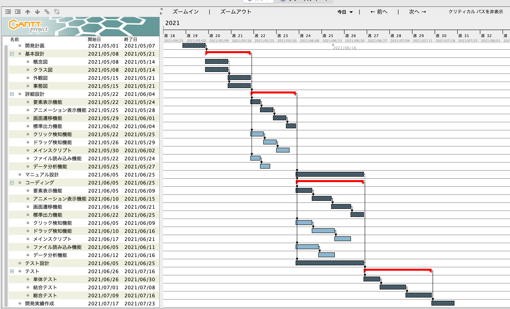

2020/07/07更新
仕様適合検査及びドキュメント、リスクマネジメント責任者を岡本悠里とする。プロジェクトマネジメントは、PMBOKに従って実行する。次項の開発スケジュールに示されたマイルストーン（目標達成へ向かう過程の一つの段階）ごとに、設計段階から仕様のチェックをクライアント（開発依頼者）と共に行う。開発にあたって不明なことが生じた場合には、必ずクライアントと協議して事を進める。
開発スケジュールを以下に示す。
詳細な計画については別途資料(pdf)で計画書を作成した。以下に作成した計画書を示す。
計画書 ---> PDF :樹状整列課題計画書v4.3.pdf